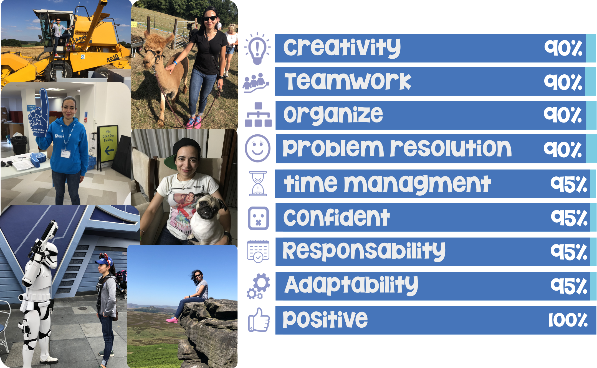
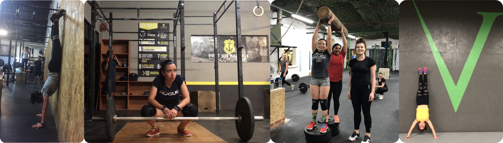
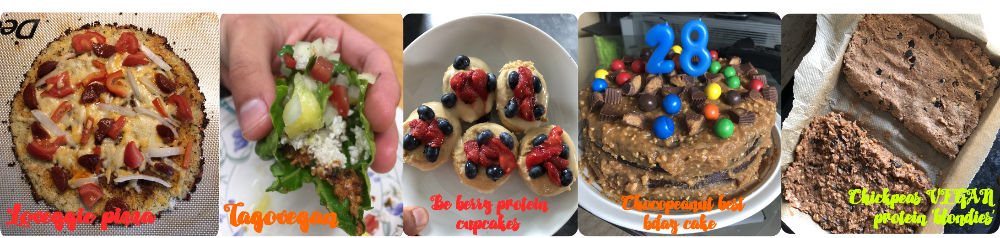

I'm Aleyda Sierra-Gonzalez a wheat researcher from Mexico. I considere myself as a friendly, creative, passion, organize and motivated human being enjoying everyday by trying to be the best version of myself and extract every possitive asspect of life + I am interested in understanding the science behing wheat physiology, genetics, cytogenetics and the use of wild wheat relatives.
Over the years I have adquired different skills that has allowed me to manage either Windows or iOS environments in which I am able to operate all the Microsoft program suite and/or Open Sources programs. Taking advantage of my creativity I have become dexterous in graphic desing and illustration, abilities that I try to employed on my daily basics, even building my own CV website (obviously with the help of CodeFirstGirls

I'm a Research Fellow at The University of Nottingham/ King's group
where I generate and characterize durum wheat material with alien introgression using molecular techniques: KASP markers, cytogenetic analysis: mcGISH and FISH and phenotypic data collected in
different environments: Mexico (CIMMYT), Morroco (ICARDA), India (IIWBR) and Malawi (LUANAR).
Besides trying to be an AWESOME wheat physiology genetic researcher 🤓 when I am not working, analyzing data, writing research papers or reading related scientific articles I spend my time either learning how to use different OpenSource programs, as well also improve my coding skills (R, python, Java, etc) and as well I like doing CrossFit and cooking. I have been doing CrossFit for around 4-5 years (without trying to be a professional athlete!) as a way to relax and allow me to join in with a different community, plus as a reward I'm getting fit! 
Cooking, cooking, cooking and more cooking! One day, I hope to open my own healthy food restaurant. I LOVE to re-invent recipes using healthy ingredients or adjusting to my macro-nutritional needs and YES from time to time I cook DELICIOUS treats🤤 